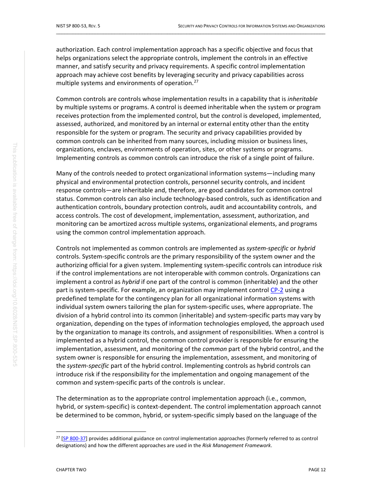
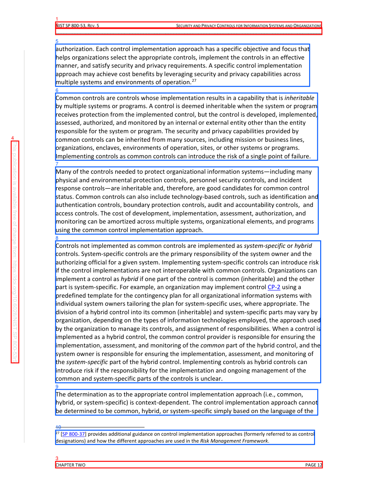

PDF Lab Second-Pass Page Review
Before Evidence


Selected Candidates
cand:p0039:0000:side_chromeside_chrome
{
"bbox": [
0.14705882352941177,
0.04473802296802251,
0.8507378272760927,
0.05821938948197798
],
"block_id": "actual:p39:block:0",
"block_index": 0,
"candidate_id": "cand:p0039:0000:side_chrome",
"confidence": 0.8,
"detection_reason": [
"block_type:header_footer_noise",
"preset_type:side_chrome",
"hardening_interest",
"boundary_geometry"
],
"features": {
"bbox_area": 0.009487,
"block_type": "header_footer_noise",
"has_toc_entries": false,
"semantic_role": "page_chrome",
"source_type": "Header",
"text_length": 94
},
"json_pointer": "/pages/38/blocks/0",
"page_index": 38,
"page_number": 39,
"pdf_id": "NIST_SP_800-53r5:fc63bcd61715d018",
"preset_type": "side_chrome",
"text_excerpt": "NIST SP 800-53, REV. 5 SECURITY AND PRIVACY CONTROLS FOR INFORMATION SYSTEMS AND ORGANIZATIONS"
}cand:p0039:0001:side_chromeside_chrome
{
"bbox": [
0.14705882352941177,
0.05679397390346334,
0.8517353332120609,
0.07054738324097913
],
"block_id": "actual:p39:block:1",
"block_index": 1,
"candidate_id": "cand:p0039:0001:side_chrome",
"confidence": 0.8,
"detection_reason": [
"block_type:header_footer_noise",
"preset_type:side_chrome",
"hardening_interest",
"boundary_geometry"
],
"features": {
"bbox_area": 0.009692,
"block_type": "header_footer_noise",
"has_toc_entries": false,
"semantic_role": "page_chrome",
"source_type": "Header",
"text_length": 97
},
"json_pointer": "/pages/38/blocks/1",
"page_index": 38,
"page_number": 39,
"pdf_id": "NIST_SP_800-53r5:fc63bcd61715d018",
"preset_type": "side_chrome",
"text_excerpt": "_________________________________________________________________________________________________"
}cand:p0039:0002:side_chromeside_chrome
{
"bbox": [
0.14705882352941177,
0.9414804632013495,
0.8528974944469976,
0.9549618345318418
],
"block_id": "actual:p39:block:2",
"block_index": 2,
"candidate_id": "cand:p0039:0002:side_chrome",
"confidence": 0.8,
"detection_reason": [
"block_type:header_footer_noise",
"preset_type:side_chrome",
"hardening_interest",
"boundary_geometry"
],
"features": {
"bbox_area": 0.009516,
"block_type": "header_footer_noise",
"has_toc_entries": false,
"semantic_role": "page_chrome",
"source_type": "Footer",
"text_length": 19
},
"json_pointer": "/pages/38/blocks/2",
"page_index": 38,
"page_number": 39,
"pdf_id": "NIST_SP_800-53r5:fc63bcd61715d018",
"preset_type": "side_chrome",
"text_excerpt": "CHAPTER TWO PAGE 12"
}cand:p0039:0003:side_chromeside_chrome
{
"bbox": [
0.0296323533151664,
0.28780303338561397,
0.049705879361021756,
0.7406287915778883
],
"block_id": "actual:p39:block:3",
"block_index": 3,
"candidate_id": "cand:p0039:0003:side_chrome",
"confidence": 0.8,
"detection_reason": [
"block_type:header_footer_noise",
"preset_type:side_chrome",
"hardening_interest",
"boundary_geometry"
],
"features": {
"bbox_area": 0.00909,
"block_type": "header_footer_noise",
"has_toc_entries": false,
"semantic_role": null,
"source_type": "Boilerplate",
"text_length": 92
},
"json_pointer": "/pages/38/blocks/3",
"page_index": 38,
"page_number": 39,
"pdf_id": "NIST_SP_800-53r5:fc63bcd61715d018",
"preset_type": "side_chrome",
"text_excerpt": "This publication is available free of charge from: https://doi.org/10.6028/NIST.SP.800 -53r5"
}cand:p0039:0004:texttext
{
"bbox": [
0.14705882352941177,
0.08994257570517183,
0.819158616408803,
0.17629918185147372
],
"block_id": "actual:p39:block:4",
"block_index": 4,
"candidate_id": "cand:p0039:0004:text",
"confidence": 0.8,
"detection_reason": [
"block_type:paragraph_block",
"preset_type:text"
],
"features": {
"bbox_area": 0.05804,
"block_type": "paragraph_block",
"has_toc_entries": false,
"semantic_role": null,
"source_type": "Body",
"text_length": 412
},
"json_pointer": "/pages/38/blocks/4",
"page_index": 38,
"page_number": 39,
"pdf_id": "NIST_SP_800-53r5:fc63bcd61715d018",
"preset_type": "text",
"text_excerpt": "authorization. Each control implementation approach has a specific objective and focus that helps organizations select the appropriate controls, implement the controls in an effective manner, and satisfy security and privacy requirements. A specific control implementation approach may achieve cost benefits by leveraging security and privacy capabilities across multiple systems and environments of operation.27"
}cand:p0039:0005:texttext
{
"bbox": [
0.14698073443244486,
0.18986769396849354,
0.8402242224200879,
0.32713152182222616
],
"block_id": "actual:p39:block:5",
"block_index": 5,
"candidate_id": "cand:p0039:0005:text",
"confidence": 0.8,
"detection_reason": [
"block_type:paragraph_block",
"preset_type:text",
"long_text_region"
],
"features": {
"bbox_area": 0.095157,
"block_type": "paragraph_block",
"has_toc_entries": false,
"semantic_role": null,
"source_type": "Body",
"text_length": 731
},
"json_pointer": "/pages/38/blocks/5",
"page_index": 38,
"page_number": 39,
"pdf_id": "NIST_SP_800-53r5:fc63bcd61715d018",
"preset_type": "text",
"text_excerpt": "Common controls are controls whose implementation results in a capability that is inheritable by multiple systems or programs. A control is deemed inheritable when the system or program receives protection from the implemented control, but the control is developed, implemented, assessed, authorized, and monitored by an internal or external entity other than the entity responsible for the system or program. The security and privacy capabilities provided by common controls can be inherited from ma"
}cand:p0039:0006:texttext
{
"bbox": [
0.14698073443244486,
0.34062086933791036,
0.8420165816163705,
0.47788465865934737
],
"block_id": "actual:p39:block:6",
"block_index": 6,
"candidate_id": "cand:p0039:0006:text",
"confidence": 0.8,
"detection_reason": [
"block_type:paragraph_block",
"preset_type:text",
"long_text_region"
],
"features": {
"bbox_area": 0.095403,
"block_type": "paragraph_block",
"has_toc_entries": false,
"semantic_role": null,
"source_type": "Body",
"text_length": 686
},
"json_pointer": "/pages/38/blocks/6",
"page_index": 38,
"page_number": 39,
"pdf_id": "NIST_SP_800-53r5:fc63bcd61715d018",
"preset_type": "text",
"text_excerpt": "Many of the controls needed to protect organizational information systems\u2014including many physical and environmental protection controls, personnel security controls, and incident response controls\u2014are inheritable and, therefore, are good candidates for common control status. Common controls can also include technology-based controls, such as identification and authentication controls, boundary protection controls, audit and accountability controls, and access controls. The cost of development, i"
}cand:p0039:0007:texttext
{
"bbox": [
0.1469986610163271,
0.4914571974012587,
0.8483793969247856,
0.7812261099767204
],
"block_id": "actual:p39:block:7",
"block_index": 7,
"candidate_id": "cand:p0039:0007:text",
"confidence": 0.8,
"detection_reason": [
"block_type:paragraph_block",
"preset_type:text",
"long_text_region",
"large_region"
],
"features": {
"bbox_area": 0.203238,
"block_type": "paragraph_block",
"has_toc_entries": false,
"semantic_role": null,
"source_type": "Body",
"text_length": 1552
},
"json_pointer": "/pages/38/blocks/7",
"page_index": 38,
"page_number": 39,
"pdf_id": "NIST_SP_800-53r5:fc63bcd61715d018",
"preset_type": "text",
"text_excerpt": "Controls not implemented as common controls are implemented as system-specific or hybrid controls. System-specific controls are the primary responsibility of the system owner and the authorizing official for a given system. Implementing system-specific controls can introduce risk if the control implementations are not interoperable with common controls. Organizations can implement a control as hybrid if one part of the control is common (inheritable) and the other part is system-specific. For ex"
}cand:p0039:0008:texttext
{
"bbox": [
0.14704087201286764,
0.7947910193241003,
0.8406557569316789,
0.8472787876321812
],
"block_id": "actual:p39:block:8",
"block_index": 8,
"candidate_id": "cand:p0039:0008:text",
"confidence": 0.8,
"detection_reason": [
"block_type:paragraph_block",
"preset_type:text"
],
"features": {
"bbox_area": 0.036406,
"block_type": "paragraph_block",
"has_toc_entries": false,
"semantic_role": null,
"source_type": "Body",
"text_length": 270
},
"json_pointer": "/pages/38/blocks/8",
"page_index": 38,
"page_number": 39,
"pdf_id": "NIST_SP_800-53r5:fc63bcd61715d018",
"preset_type": "text",
"text_excerpt": "The determination as to the appropriate control implementation approach (i.e., common, hybrid, or system-specific) is context-dependent. The control implementation approach cannot be determined to be common, hybrid, or system-specific simply based on the language of the"
}cand:p0039:0009:footnotefootnote
{
"bbox": [
0.14705882352941177,
0.8779621316929056,
0.8321292353611366,
0.9071060334793245
],
"block_id": "actual:p39:block:9",
"block_index": 9,
"candidate_id": "cand:p0039:0009:footnote",
"confidence": 0.8,
"detection_reason": [
"block_type:footnote",
"preset_type:footnote",
"hardening_interest"
],
"features": {
"bbox_area": 0.019966,
"block_type": "footnote",
"has_toc_entries": false,
"semantic_role": null,
"source_type": "Footnote",
"text_length": 203
},
"json_pointer": "/pages/38/blocks/9",
"page_index": 38,
"page_number": 39,
"pdf_id": "NIST_SP_800-53r5:fc63bcd61715d018",
"preset_type": "footnote",
"text_excerpt": "27 [SP 800-37] provides additional guidance on control implementation approaches (formerly referred to as control designations) and how the different approaches are used in the Risk Management Framework."
}Review Validation
{
"candidate_count": 10,
"errors": [
"scillm_review_call_failed"
],
"expected_candidate_ids": [
"cand:p0039:0000:side_chrome",
"cand:p0039:0001:side_chrome",
"cand:p0039:0002:side_chrome",
"cand:p0039:0003:side_chrome",
"cand:p0039:0004:text",
"cand:p0039:0005:text",
"cand:p0039:0006:text",
"cand:p0039:0007:text",
"cand:p0039:0008:text",
"cand:p0039:0009:footnote"
],
"ok": false,
"page_case": {
"case_id": "page_case_0001_p0039",
"page_number": 39
},
"schema": "pdf_lab.second_pass.review_validation.v1",
"seen_candidate_ids": []
}
Page Case
{
"candidate_ids": [
"cand:p0039:0000:side_chrome",
"cand:p0039:0001:side_chrome",
"cand:p0039:0002:side_chrome",
"cand:p0039:0003:side_chrome",
"cand:p0039:0004:text",
"cand:p0039:0005:text",
"cand:p0039:0006:text",
"cand:p0039:0007:text",
"cand:p0039:0008:text",
"cand:p0039:0009:footnote"
],
"case_id": "page_case_0001_p0039",
"forced_by_human_annotation": false,
"page_index": 38,
"page_number": 39,
"preset_counts": {
"footnote": 1,
"side_chrome": 4,
"text": 5
},
"selection_probability_basis": {
"candidate_count_on_page": 10,
"candidate_share_estimate": 0.00112867,
"forced_page": false,
"method": "max(weighted_page_score_inclusion_estimate,candidate_share_estimate)",
"page_score": 31.25,
"total_candidate_count": 8860,
"total_page_score": 26441.0,
"weighted_page_score_inclusion_estimate": 0.00118188
},
"selection_probability_estimate": 0.00118188,
"selection_reason": [
"high_risk_preset",
"high_risk_candidate",
"boundary_geometry",
"high_candidate_score"
],
"selection_score": 31.25,
"strata": [
"geometry:boundary",
"preset:footnote",
"preset:side_chrome",
"preset:text",
"risk:high"
]
}
Artifacts
- state.json
- sampled_candidate_manifest.json
- page_before.json
- page_before.png
- page_candidates.png
- selected_candidates.json
- candidate_presets.json
- review_request.json
- review_request_validation.json
- scillm_orchestrator_page_dag_spec.json
- scillm_orchestrator_page_dag_spec_validation.json
- scillm_orchestrator_page_submission.json
- scillm_orchestrator_page_submission_validation.json
- scillm_page_orchestrator_run_request.json
- scillm_page_orchestrator_run_validation.json
- tau_attempt1_receipt.json
- tau_attempt1_error.json
- tau_attempt2_receipt.json
- tau_attempt2_error.json
- tau_attempt3_dpi110_receipt.json
- tau_attempt3_dpi110_error.json
- brave_search_ollama_timeout.json
- webgpt_assess_bundle.md
- scillm_review_error.json
- review_validation.json
- review.html
- terminal_ledger_validation.json
{kind=link}
{kind=link}